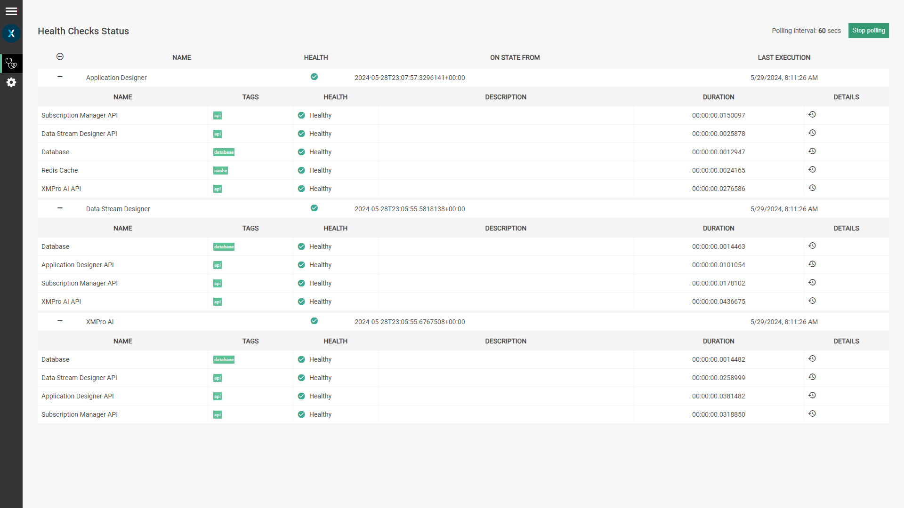
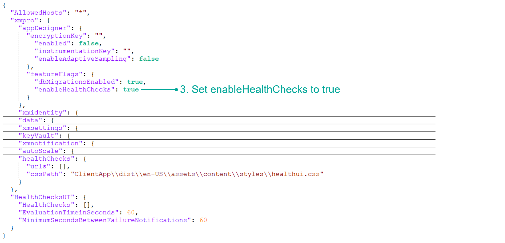
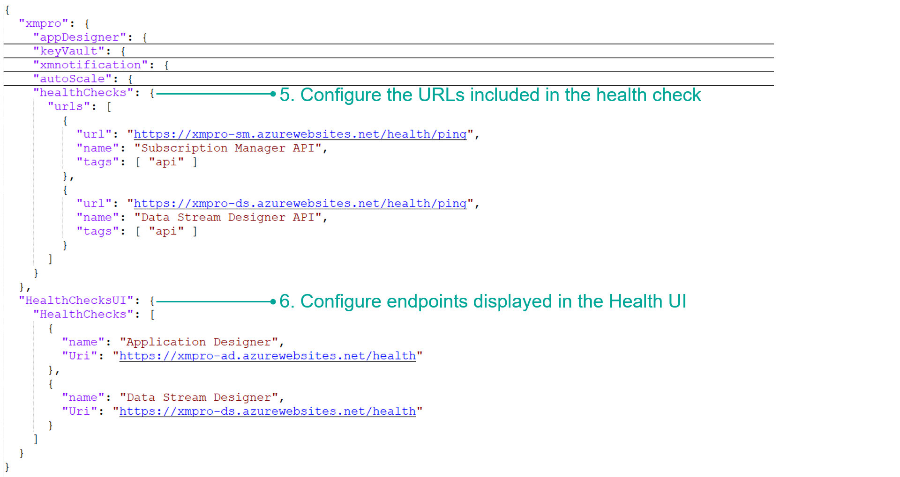
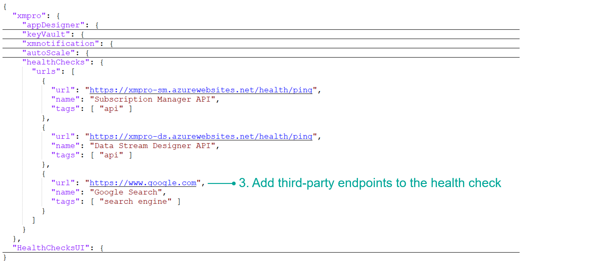

Configure Health Checks (Optional)
Overview
Health checks are the industry standard for the initial diagnostic step of the troubleshooting process, which provides information about the health and readiness of XMPro services. The health checks achieve this by performing periodic evaluations of connected services - each of which returns a status of healthy or unhealthy.
The health checks are disabled by default. Once the health checks are turned on, you can opt to view them in the Health UI or add the endpoints to your existing business application health monitoring IT solution.
Note
It is also possible to include third-party endpoints - enabling you to monitor all of your health checks in a central location.
Health Endpoints
Each XMPro service has an endpoint that can be accessed to determine its overall health. The following health checks are performed to test different dependencies:
- Connection to other XMPro services
- Connection to the databases
- Connection to Redis Cache
The raw JSON of the results can be accessed through the health path of the service's URL. For example, https://xmpro-ad-sample.azurewebsites.net/health

Below is the description for each entry in the health check:
| Property | Description |
|---|---|
| Data | Additional data provided by the health check. By default, this is empty. |
| Description | An optional explanation of the health check. |
| Duration | The amount of time that the health check took to run. |
| Status | The health check status options are:
|
| Tags | Labels that are used to group or describe the kind of health check being done. |
Health UI
The UI provides a user-friendly display of the responses from the health endpoints.
To access the health checks performed, visit the health UI of any of the services using the health-ui path. For example, https://xmpro-ad-sample.azurewebsites.net/health-ui.
The health check for XMPro AI was added in v4.4.5.

Configure Health Checks
The following steps describe how to turn on the health check functionality.
Application Designer
- Navigate to the IIS location where Application Designer has been installed.
- Open the App Designer appsettings.json file.
- Set
enableHealthCheckin thefeatureFlagsobject to true.
Note
This feature flag turns on both the /health and /health-ui endpoints.

- Configure the URLs you want to include in the health checks within the
healthChecksobject. The standard endpoint for each XMPro service is/health/ping.
"healthChecks": {
"urls": [
{
"url": "<subscription manager url>/health/ping",
"name": "Subscription Manager API",
"tags": [ "api" ]
},
{
"url": "<data stream designer url>/health/ping",
"name": "Data Stream Designer API",
"tags": [ "api" ]
},
{
"url": "<xmpro ai url>/health/ping",
"name": "XMPro AI API",
"tags": [ "api" ]
}
]
}
- Configure the
/healthendpoints you want to include in the UI within theHealthChecksUIobject.
"HealthChecksUI": {
"HealthChecks": [
{
"name": "Application Designer",
"Uri": "<application designer url>/health"
},
{
"name": "Data Stream Designer",
"Uri": "<data stream designer url>/health"
},
{
"name": "XMPro AI",
"Uri": "<xmpro ai url>/health"
}
]
}

- Save the file.
- Restart the Application Designer service.
Data Stream Designer
Repeat the above steps for Data Stream Designer, using these values for step 4:
"healthChecks": {
"urls": [
{
"url": "<subscription manager url>/health/ping",
"name": "Subscription Manager API",
"tags": [ "api" ]
},
{
"url": "<application designer url>/health/ping",
"name": "Application Designer API",
"tags": [ "api" ]
},
{
"url": "<xmpro ai url>/health/ping",
"name": "XMPro AI API",
"tags": [ "api" ]
}
]
}
XMPro AI
Repeat the above steps for XMPro AI, using these values for step 4:
"healthChecks": {
"urls": [
{
"url": "<subscription manager url>/health/ping",
"name": "Subscription Manager API",
"tags": [ "api" ]
},
{
"url": "<application designer url>/health/ping",
"name": "Application Designer API",
"tags": [ "api" ]
},
{
"url": "<data stream designer url>/health/ping",
"name": "Data Stream Designer API",
"tags": [ "api" ]
}
]
}
Adding Third-Party Endpoints
Third-party endpoints are supported and can be included as part of the health check. These are added in the same place as the XMPro service health checks.
Note
Only endpoints that do not need additional authorization are currently supported for the health checks.
- Open the appsettings.json file.
- Add third-party endpoints to the
healthChecksobject. - Save the file and restart the XMPro product service.

Below are the properties in this configuration when including other URLs in the health check:
| Property | Description |
|---|---|
| url | Determines the URL to check. |
| name | Determines the name/identifier of the health check to be performed. |
| tags | Determines the tag for the health check. This is useful for tagging/grouping health checks. |
| timeout | The amount of time to wait for a response from the site. The health check will return as Unhealthy if the timeout is reached while waiting for the URL. By default, this is empty and will wait for the URL indefinitely. |
Last modified: May 28, 2025